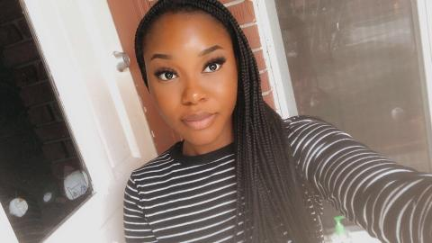
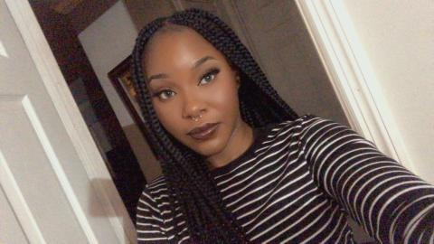
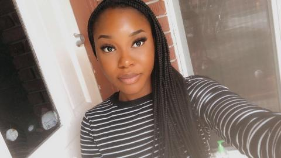
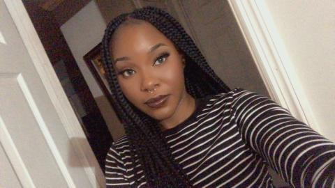

This song has been my favorite since I was a child. The way I interpret this song is that there is so much to life and that your "story" is never over.Even if things seem rough now, things can change. This song has always seem to help me put things into perspective.
<

 


